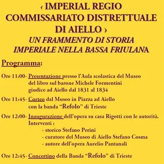

sab 3 ott
Inaugurazione dello stemma rianimato "Imperial Regio Commissariato Distrettuale di Aiello"
INAUGURAZIONE DELLO STEMMA RIANIMATO ‹‹ IIMPERIAL REGIO COMMISSARIIATO DISTRETTUALE DI AIELLO ›› UN FRAMMENTO DI STORIA IMPERIALE NELLA BASSA FRIULANA Programma: Ore 11:00- Presentazione presso l’Aula scolastica del Museo del libro sul barone Michele Formentini giudice ad Aiello…
 Indicazioni
Indicazioni
- Costi e prenotazioni
- Costo non indicato · Prenotazione non indicata
- Programma
- Programma da verificare. Apri la fonte ufficiale per orari e possibili aggiornamenti.
- In caso di maltempo
- Nessuna indicazione specifica pubblicata.
- Note
- Acquisito automaticamente dalla fonte.
L’EVENTO
Descrizione completa
INAUGURAZIONE
DELLO STEMMA RIANIMATO
‹‹ IIMPERIAL REGIO
COMMISSARIIATO DISTRETTUALE
DI AIELLO ››
UN FRAMMENTO DI STORIA
IMPERIALE NELLA BASSA FRIULANA
Programma:
Ore 11:00- Presentazione presso l’Aula scolastica del Museo
del libro sul barone Michele Formentini
giudice ad Aiello dal 1831 al 1834
Ore 11:45- Corteo dal Museo in Piazza ad Aiello
con la banda “Refolo” di Trieste
Ore 12:00- Inaugurazione dell’opera su casa Rigotti con le autorità.
Interventi :
- storico Stefano Perini
- curatore del Museo di Aiello Stefano Cosma
- autore dell’opera Aurelio Pantanali
Ore 12:45- Concertino della Banda “Refolo” di Trieste
Ore 13:00- Rinfresco offerto dalla famiglia Rigotti
QUESTO “EDIFICIO” (CASA RIGOTTI) HA OSPITATO DAL 1814 AL 1838, L’IMPERIAL REGIO
COMMISSARIATO DISTRETTUALE DI AIELLO, IMPORTANTE ORGANO AMMINISTRATIVO E
GIUDIZIARIO DELL’IMPERO D’AUSTRIA. DA QUESTO “EDIFICIO” SI AMMINISTRAVA LA GIUSTIZIA
E SI GOVERNAVA IL TERRITORIO CIRCOSTANTE IN NOME DELL’IMPERATORE.
IL PANNELLO RIPRODUCE IL GRANDE STEMMA DI STATO DELL’EPOCA. I POCHI RESTI PITTORICI
ORIGINALI SONO STATI PROTETTI DA UN’INTERCAPEDINE AERATA RETROSTANTE AL PANNELLO.
IL PROGRAMMA
Programma e orari
Appuntamenti raccolti dalle fonti elencate. Dove manca un orario, non è ancora disponibile in questa scheda.
Programma pubblicato
- Ore 11:00- Presentazione presso l’Aula scolastica del Museo
- Ore 11:45- Corteo dal Museo in Piazza ad Aiello
- Ore 12:00- Inaugurazione dell’opera su casa Rigotti con le autorità.
- Ore 12:45- Concertino della Banda “Refolo” di Trieste
- Ore 13:00- Rinfresco offerto dalla famiglia Rigotti
INFORMAZIONI UTILI
Prima di partire
- Controllare la fonte prima di partire.
ORGANIZZAZIONE